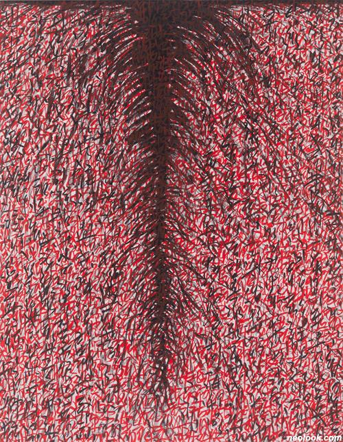
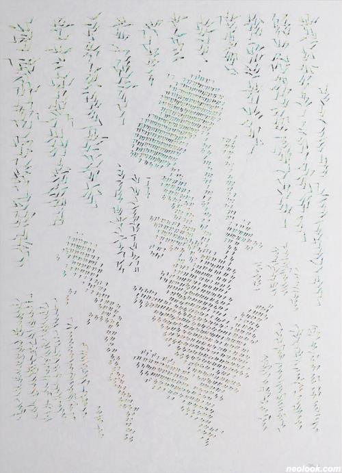

오윤석
무엇을
>>대상으로부터, 기억으로부터 유추된 인상
어떻게
>>종교적 경전이나 고백 문의 텍스트를 분해하고, 재조립하여 이미지와 결합해 관념의 텍스트가 아닌 절대적 봄의 텍스트로 완성해 '독해'와 '매혹'의 중간 어느 지점에서 관객과 마주하도록 했다.
왜
>>만들어낸 이미지-텍스트가 인용하고 있는 문자의 의미와 사용하고 있는 예술적 수단을 넘어서 새롭게 열리는 만남의 공간에서 존재하기를 바라는 것이다.
또한, 그 만남이 끊임없이 춤추며 진동하는 수많은 인간의 눈동자들과 같이 언제나 빛을 기다리는 순수한 '비어 있음'과 동시에 그 자체로 눈부시게 빛나는 '충일(充溢)'을 지향하는 것이라고 할 수 있다.

-오윤석_Herb-Red Heart 01_캔버스에 잉크_117×91cm_2016

-오윤석_Hidden Memories-1603_캔버스에 종이, 잉크, 아크릴채색, 핸드컷팅_180×130cm_2016